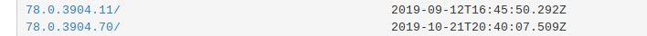
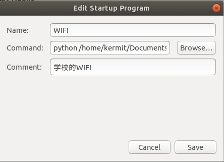

前言
近日与同学聊天，我偶然了解到他写了一个自动登陆网站并且签到的脚本，马上有了兴趣。正好，我常常因每次开机都用登陆校园网而感到麻烦，索性就自己写一个能够自动登陆校园网的脚本。
开发环境
系统
window7
ubuntu18.04
selenium库
Selenium 是一组软件工具集,每一个都有不同的方法来支持测试自动化。大多数使用 Selenium 的QA工程师只关注一两个最能满足他们的项目需求的工具上。然而，学习所有的工具你将有更多选择来解决不同类型的测试自动化问题。这一整套工具具备丰富的测试功能，很好的契合了测试各种类型的网站应用的需要。这些操作非常灵活，有多种选择来定位 UI 元素，同时将预期的测试结果和实际的行为进行比较。Selenium 一个最关键的特性是支持在多浏览器平台上进行测试。
安装库
1 | pip install selenium |
查看库
1 | pip show selenium |
webdriver
Selenium 2.0 最主要的一个新特性就是集成了 WebDriver API。WebDriver 提供更精简的编程几口，以解决 Selenium-RC API 中的一些限制。WebDriver 为那些页面元素可以不通过页面重新加载来更新的动态网页提供了更好的支持。WebDriver 的目标是提供一套精心设计的面向对象的 API 来更好的支持现代高级 web 应用的测试工作。
win7+Chrome
我的window7系统上使用的浏览器是Chrome，所以我需要下载一个Chorme的webdriver
首先你需要知道知道你电脑上Chrome的版本，你可以在Chrome的help中找到。
然后进入下载的网站，下载对应版本的webdriver。
我的Chrome是78版的，所以我也下载了78版

接着将其解压，并移动到Chrome的安装目录（或者别的什么目录），并且添加的你的环境变量中的path中。
ubuntu+firefox
我的ubuntu系统上使用的火狐浏览器，因此我需要下载火狐的驱动geckodriver
同样你需要知道知道你电脑上firefox的版本,然后进入下载的网站，下载对应版本。
下载到本地后，进入所在文件夹，打开终端并执行以下指令1
2
3tar -xvzf geckodriver*
chmod +x geckodriver
sudo mv geckodriver /usr/local/bin
分别是解压，赋予权限，移动。
代码
开发环境搭建好了，接下来就可以代码了。
代码很简单，只有短短二十几行。
除了自动登陆校园网之外，我还增加了自动检测网络的功能。
如果网络尚未连接，那么程序将会不断地登陆校园网，直到检测到网络。
检测网络我用的是最简单的ping。1
2
3
4
5
6
7
8
9
10
11
12
13
14
15
16
17
18
19
20
21
22
23
24
25
26#!/usr/bin/env python
# -*- coding: utf-8 -*-
import time
import os
from selenium import webdriver
#linux的 ping 命令和windows不一样，会不断的发送包，所以使用ping -c 4 [ip/域名]来限制发包的次数
while os.system('ping -c 4 www.kxjzxc.github.io'):
# 打开浏览器，同时打开自己想要打开的网页
url='http://10.248.98.2/'
driver=webdriver.Chrome(executable_path="C:\\Program Files (x86)\\Google\\Chrome\\Application\chromedriver.exe")
#driver=webdriver.Firefox()
driver.get(url) # 打首登录页面，此处略去网址
username="xxxxxxxxx"
password="xxxxxxxxxx"# 用户名和密码是自己的
# 通过id定位搜索框，同时输入登录用户名密码
driver.find_element_by_id('username').clear()
driver.find_element_by_id('username').send_keys(username)
driver.find_element_by_id('password').clear()
driver.find_element_by_id('password').send_keys(password)
driver.find_element_by_id('login').click()
driver.close();
设置开机自启
脚本写完了，我们需要让它一开机就自动运行
windows7
windows上的操作很简单。
首先打开启动文件夹（开始->所有程序->启动->右键打开）,然后自己新建一个bat文件，并以记事本的方式打开。
在bat文件中添加以下语句：1
2python E:\Document\Autorun_program\network.py
pause
保存关闭，并且重启测试，完成。
ubuntu
ubuntu上可能比较麻烦，我尝试了两种方法，但只实现了一种。
方法一
第一个方法是通过设置rc.local开机启动命令/脚本来实现
这一篇博文讲得比较详细，我这里就简单讲一下操作
编辑以下脚本
1
sudo gedit lib/systemd/system/rc.local.service
在末尾加上以下内容
1
2
3[Install]
WantedBy=multi-user.target
Alias=rc-local.service创建并打开rc.local
1
2sudo touch /etc/rc.local
sudo gedit /etc/rc.local在文件中写入指令
1
2
3python /home/kermit/Documents/Autorun_program/network.py
exit 0创建软链接
1
ln -s /lib/systemd/system/rc.local.service /etc/systemd/system/
重启测试
不过以后还有脚本需要开机自启的话，应该只用编辑rc.local文件即可。
但是很可惜这种方法我并未实现，原因我也不是很清楚。
方法二
第二个方法则是通过ubuntu自带的开机自启应用“Startup Application”来实现
找到以上应用并打开，选择Add，即添加应用或脚本。

第一栏与第三栏添加名字和描述，可以随意填写。
在第二栏填写你想要运行的脚本命令。
点击保存，关闭。
此方法实测有效
参考的资料
ping命令
语法
1 | ping(选项)(参数) |
选项
1 | -d：使用Socket的SO_DEBUG功能； |
结语
ok，自动登陆校园网就那么完成了。
不得不说python是一个极其好用的工具，我甚至怀疑这门语言是面向非程序员开发的。
几个包，几行代码，就很好的辅助，真是舒服